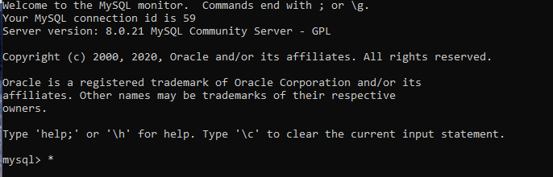
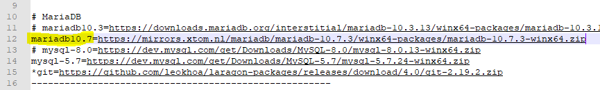
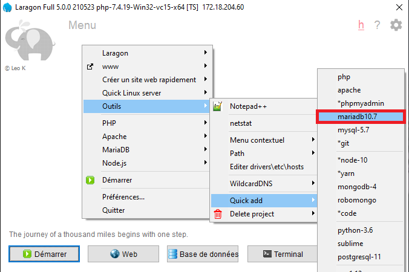
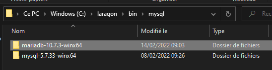

BDD - MariaDB : Installation
MariaDB est un Système de Gestion de Bases de Données relationnelles (SGBDr) : les données y sont enregistrées dans des tableaux à deux dimensions (lignes et colonnes ; comme sur un tableur Excel classique, par exemple).
Installation de MariaDB pour Ubuntu (Linux)
Sur Linux, nous pouvons lancer l'installation directe de MariaDB.
Ouvrez un terminal sur votre machine, et saisissez l'instruction :
sudo apt install mariadb-serverPar défaut, à l'installation, MariaDB crée un utilisateur par défaut, sans mot de passe.
Problème : Linux n'accepte pas les connexions MySQL avec un mot de passe vide !
Pour plus de simplicité, nous allons donc nous créer un utilisateur admin sur MariaDB pour travailler avec nos bases de données.
Toujours dans votre terminal, saisir :
sudo mysqlMariaDB étant un fork de MySQL, il faut passer par la commande
mysqlsur Linux pour entrer dans MariaDB...
Vous ouvrirez ainsi l'invite de commandes de MySQL / MariaDB :

Entrez alors les instructions suivantes (nous verrons ensuite ces syntaxes plus en détail) :
- pour créer l'utilisateur avec le mot de passe voulu :
CREATE USER 'admin'@'localhost' IDENTIFIED BY '<VotreMotDePasse>'; -- renseignez le mot de passe de votre choix - pour donner tous les droits à cet utilisateur :
GRANT ALL PRIVILEGES ON *.* to 'admin'@'localhost' WITH GRANT OPTION; - pour valider l'activation des droits :
FLUSH PRIVILEGES; - pour sortir de MySQL :
exit;
Installation de MariaDB pour Windows :
Pour utiliser MariaDB sur Windows, le plus simple est encore d'utiliser un environnement de développement web (Laragon, WampServer, etc.).
Avec Laragon
--> Voir ici les instructions pour découvrir et installer Laragon
Par défaut, Laragon s'installe avec le SGBDr MySQL. Pour en changer, il est nécessaire d'installer le SGDBr voulu et de le configurer par défaut.
Pour utiliser MariaDB :
-
Fermez toutes les connexions de Laragon (Apache, MySQL)
-
Accédez au fichier de configuration des Quick Adds (= menu d'installations rapides), en passant par le Menu (clic droit) > Outils > Quick add > Configuration... :

- Rendez-vous dans la section qui concerne MariaDB (l.10) ; on voit qu'une ligne de téléchargement de MariaDB est prévue (l. 11), mais commentée (
#en début de ligne).
De plus, celle-ci n'est pas forcément la dernière version (c'est la v10.3 qui est proposée, et le lien est obsolète...)

- Vérifiez le lien de téléchargement à inscrire, sur la page de téléchargement de MariaDB :
- conservez la version de MariaDB Server proposée qui est généralement la dernière, ou tout du moins, la plus courante actuellement
- renseignez votre configuration (par défaut, OS
Windows, architecturex86_64) - sélectionnez le type de paquet
ZIP file - cliquez sur
Download(annuler le fichier proposé en téléchargement si nécessaire), et copiez le lien pour le téléchargement direct du ZIP via le lienherede l'encart ouvert automatiquement (si la page s'est rafraîchie, faire Retour) :

- Dans le fichier de configuration, ajoutez une ligne pour pouvoir télécharger la dernière version de MariaDB récupérée :
- sur une nouvelle ligne, renseignez le nom de l'entrée (ici,
mariadb10.7) et ajoutez un= - puis collez le lien copié sur le site
- sur une nouvelle ligne, renseignez le nom de l'entrée (ici,

- Enregistrez les modifications du fichier et fermez-le. Retournez dans le Quick add pour sélectionner l'entrée créée : Menu (clic droit) > Outils > Quick add > mariadb10.7, et laissez Laragon installer MariaDB

MariaDB est installé ! Il ne reste plus qu'à le définir comme SGBDr par défaut pour Laragon... Encore un peu de patience, on y est presque !
- Rendez-vous dans le répertoire d'installation des SGDBr type MySQL de Laragon pour récupérer le nom du répertoire de MariaDB : par défaut, il s'agit de
C:\laragon\bin\mysql. Et on y trouve :

- Dans Laragon, ouvrez le fichier de configuration global depuis Menu (clic droit) > Laragon > laragon.ini :

- Dans la section
[mysql], remplacez la version à utiliser par celle de MariaDB, en renseignant le nom du répertoire trouvé :

- Enregistrez les modifications du fichier et fermez-le.
Fermez complètement Laragon (y compris dans la barre des tâches, en bas à droite) et redémarrez-le.
Vérifiez que MariaDB remplace bien MySQL comme SGBDr principal :

On y est : Laragon est configuré pour MariaDB !